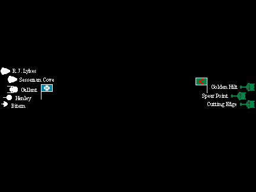
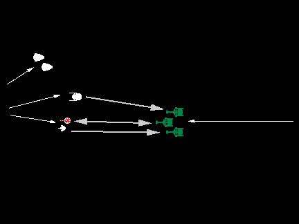

Battle Report
This was the first battle using the Starship Tactical Combat Simulator. None of the players really knew the system or the better ways to play. The Klingons were generally just luckier with their dice.

Neither side did anything special for their starting positions. Each placed all their ships in the same hex on opposite sides of the battle area.

The Klingons raced straight at the Federation force. The Federation ships pulled slowly apart. The Henley and Bitern eased slightly to their right. The Gallant moved to its left to begin an envelopment. The two freighters moved farther to the right behind the warships.
At a fairly long range the two sides opened fire. The Federation ships each engaged their opposite enemy ship. The Klingons all concentrated on the Henley. Only the fire from the Gallant caused noticeable damage to its target, the Golden Hilt. The Klingon fire effectively knocked out the Henley.
The sides continued to close. Again the Klingons concentrated their fire. This time the target was the Gallant, which was seriously damaged. The Federation ships repeated their fire on their previous targets, with only the Golden Hilt receiving any notably amount of damage.
The Klingons finally turned on the Bitern. She had no chance in the face of all three enemy ships. The damage taken was more than enough to cause her warp engine to explode, doing a bit of damage to the Spear Point.
After the Bitern died, the Klingons turned to board and capture the two warships. The Gallant was very marginally usable, while the Henley was only good for scrap. Although the capture of a Star Fleet cruiser would undoubtedly lead to notable fame upon their return to base, they failed to even look at the two fleeing freighters. As a result, the battle was ruled a major tactical victory for the Klingons, but a total strategic loss.
| Star Fleet | Gallant | Captured (very heavy damage) | ||
| Henley | Captured (worthless) | |||
| Bitern | Exploded | |||
| Sesseman Cove | Escaped undamaged | |||
| R. J. Lyke | Escaped undamaged | |||
| Klingon Empire | Spear Point | Minor damage | ||
| Cutting Edge | Undamaged | |||
| Golden Hilt | Moderate damage |
This was intended as a learning experience, and it was; especially for the Federation players. Neither side attempted any serious maneuvering. This was fine for the Klingons, who simply concentrated their fire on each enemy ship in turn. For the Federation, who failed to concentrate fire, the lack of maneuvering meant that each ship took the heavy damage.
The Federation ships paid for their lack of maneuvering. The Klingons paid for their interest in enemy warships over the more important freighters.